Vistas previas locales en /dev-onboarding (solo build de desarrollo). El onboarding actual no cambió. Ninguna versión crea cuentas ni guarda nada; «Empezar el Día 1» muestra lo que haría la app. 46/46 comprobaciones a 390 y 320 px; 1027 pruebas del proyecto pasan; typecheck y lint limpios.
| Respuesta | Primera pregunta del Día 1 |
|---|---|
| Me pesa mucho / bastante | ¿Qué es lo que más te cuesta con el dinero? |
| Me pesa un poco | ¿Qué parte de tu dinero te gustaría tener más clara? |
| Casi no me pesa / No me pesa | ¿Qué te está funcionando con el dinero y quieres cuidar? |
| Sin responder / directo | ¿Qué te gustaría entender mejor sobre tu dinero? |
| Lo que entra · lo que necesito cubrir · fechas | una pregunta por tema |
Pendiente: el Día 1 real aún abre siempre con «¿Qué es lo que más te cuesta…?»; la pregunta ajustada necesita una variante en el contenido del Día 1. El tema es siempre «Semana 1 · Claridad financiera»; ninguna versión promete un «mapa del dinero».
Una sola escala de «cuánto te pesa» y una primera pregunta que cambia según la respuesta. Más personal; son tres pantallas y depende de que el Día 1 tenga esas variantes.
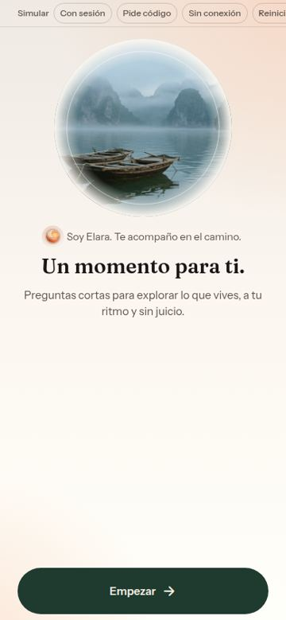
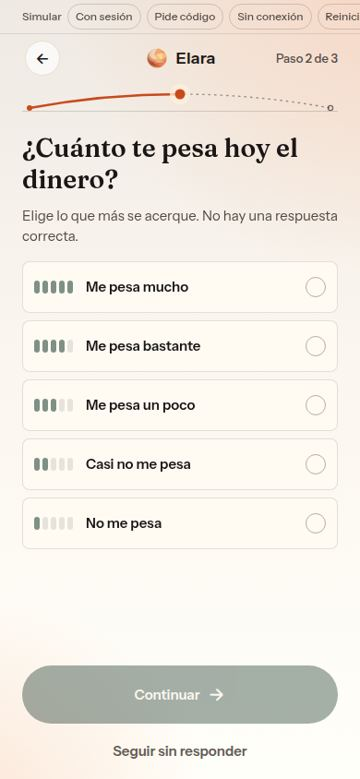
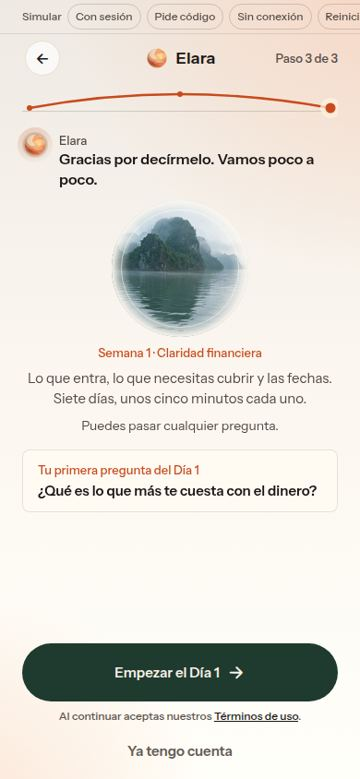
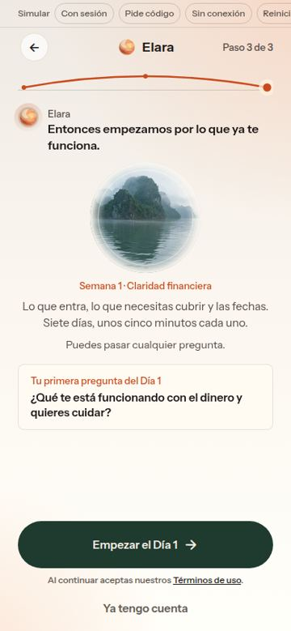
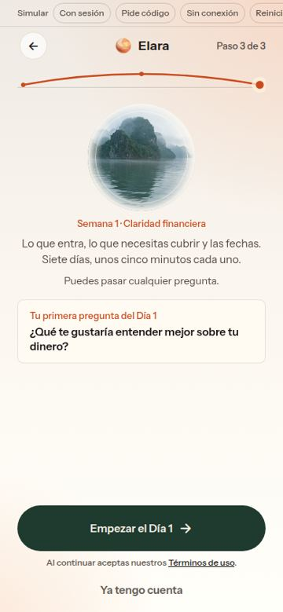
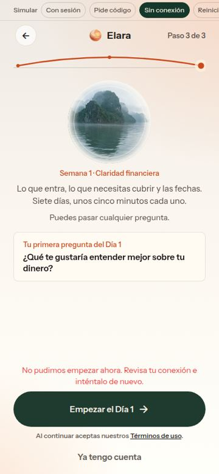
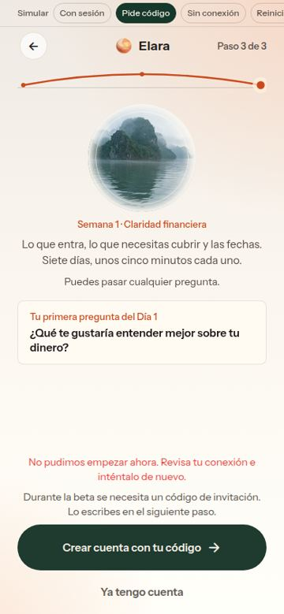
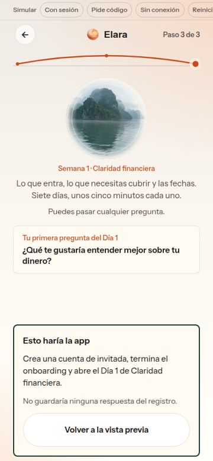
Ella decide si empieza con una pregunta (qué mirar primero, no cómo se siente) o va directo al Día 1. No supone que está pasando por algo difícil. Pide una decisión más al inicio.
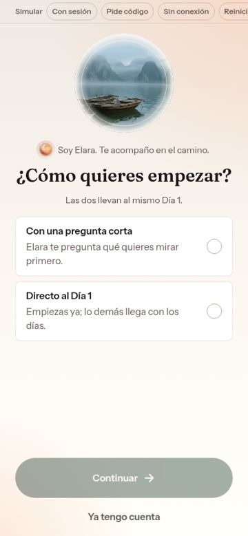
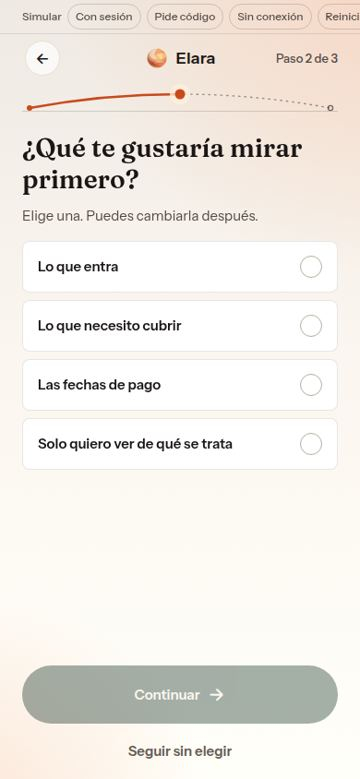
Una pantalla y un botón. Explica la cuenta de invitada antes de crearla. El registro es opcional y vuelve a la misma pantalla. Lo más rápido; Elara sabe menos al llegar al Día 1.
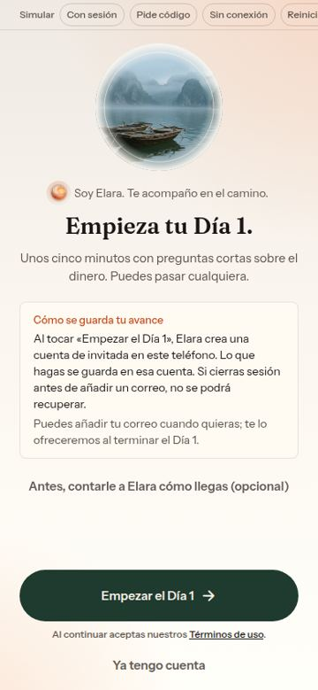
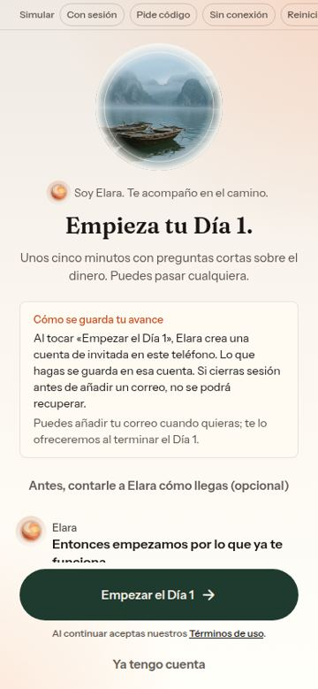
Ventana más pequeña o ausente en pantallas bajas para que las opciones y el botón entren sin desplazarse.
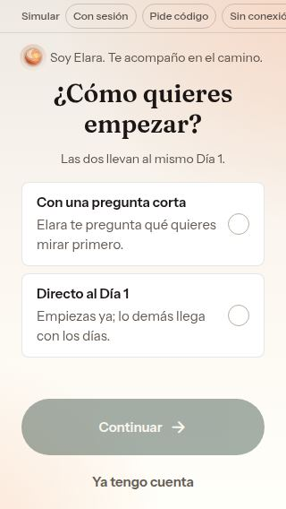
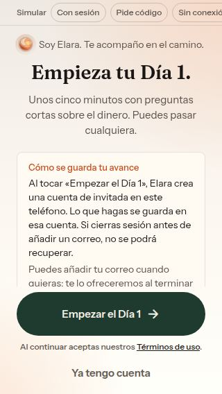
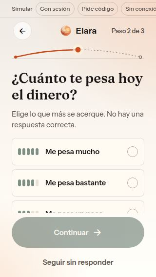